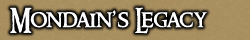
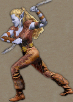

<TABLE BORDER CELLPADDING="0" background="bocimages/scrollbgdark.gif" width="100%">
	<TR>
	<!-- Header or whatever -->
	<BR>
		<TD valign="top" class="notes">
		<U><B>Mondain's Legacy:
	      General</B></U><BR>
	      * Nay Spellweaving allowed.<BR>
	      * ML Elves are allowed in the Baronship, but they must have <a href="http://cove.fantasyworld.nl/forum/index.php/topic,11444.0.html">the appropriate colouring</a>. <BR>
	      <BR>
	      <U><B>Mondain's Legacy: Items</B></U><BR>
	      * All quivers except the Quiver of Infinity are allowed, but they must be dyed black.<BR>
	      * Nay ML Armour is allowed (Unless under Special Allowance).<BR>
	      * Elven clothing, including belts and shoes, is allowed.<BR>
	      * For Craftable ML Items ONLY Pre-ML Resources may be used (i.e. no special
	      woods).<BR>
	      * Plus... Allowed Weapons List and Locked Items List (See Below).<BR>
	      <BR>
	      <U><B>Mondain's Legacy: Allowed Weapons</B></U><BR>
	      <I>Radiant Scimitar <BR>
	      War Cleaver <BR>
	      Leafblade <BR>
	      Elven Machete <BR>
	      Wild Staff<BR>
	      Elven Composite Longbow (**Unlocked**)<BR>
	      Rune Blade (**Unlocked**)</I> <BR>
	      <I>Ornate Axe (**Unlocked**)</I><BR>
	      <I>Diamond Mace (**Unlocked**)</I><BR>
	      <I>Assassin Spike (**Unlocked**)</I><BR>
	      <BR>
	      <U><B>Locked Items List</B></U><BR>
	      These are Items that are nay allowed until they have been released through
	      relevant questing organised by Militia Command and the Baron's Court;<BR>
	      <I>Elven Spellblade <BR>
	      Magical Shortbow</I>
	      <P>
	      <I>Updated: 10/04/09</I>
	      <P>
		</TD>
	</TR>
</TABLE>
